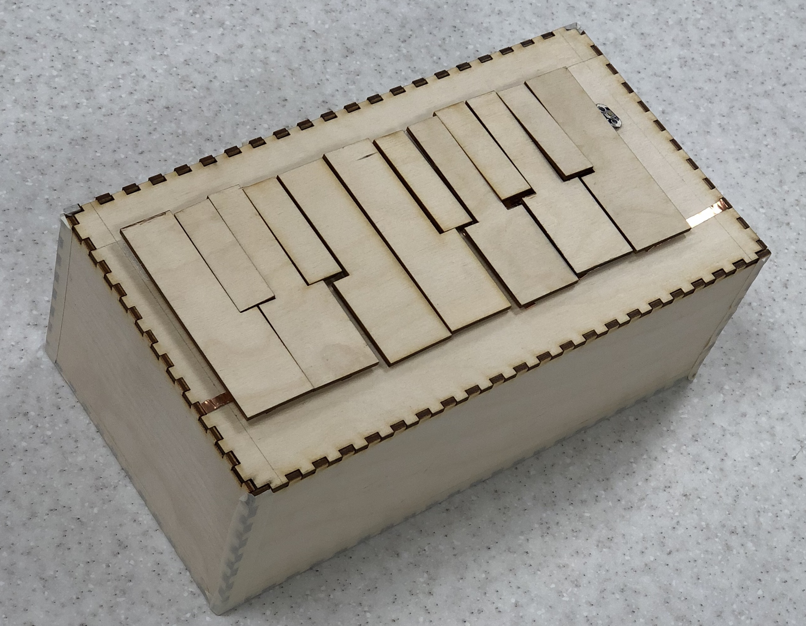
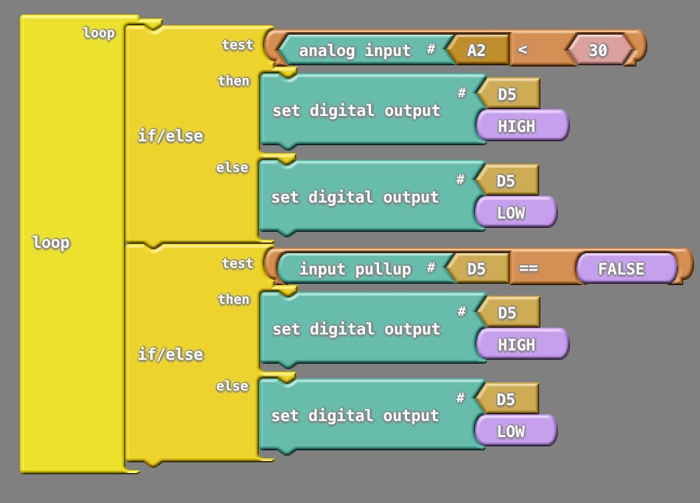
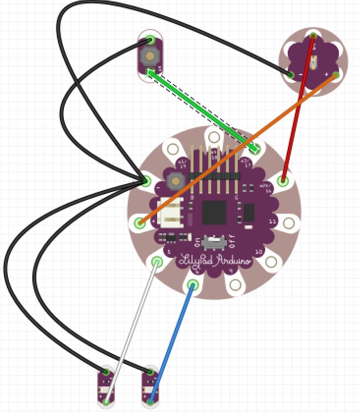

Recycling Arduino Project
I along with two other classmates worked to create a recycling project that would incentivize the public to recycle more and educate them on proper recycling practices. This project won second place at the IU School of Informatics, Computing, and Engineering 2018 Spring Symposium.
Here is a link to the instructable if you would like to see the step by step process. Here is the link to the wiki describing the proect. The basic idea of the project is that when weight is applied to the scale, it will light up and LED strip. This strip's color correlates to how much weight is added, and displays a color. We chose to use red for when there is no weight, and green from when the goal weight is hit. When the weight is somewhere in the middle, it displays a color that is calculated as a function of the weight and the color's RGB value scales from red to green.
This project was very benenficial in reinforcing the skills we've learned in this class. For example, we ran into a lot of issues regarding the weight sensor. We initially bought the wrong kind of sensor, which was too flexible and not good for uniform force pressing down on it. We then switched to sensors that are typically found in bathroom scales and that was much better at getting weight readings. Similarly, rigidly mounting the sensors was difficult, and we ended up 3D printing a platform that bends the sensor correctly.
Construction of the box went smoothly though, and the satisfaction of the system working correctly was very satisfying. If I were to do this project again, I would implement a button that when pressed would show the color, and turn off after a set amount of time. This way, the system would not draw wasted power and be more eco-friendly.
Mini Arduino Keyboard
Teaching Basic Music Concepts
The aim of this project is to create a single octave midi keyboard which can be used as a tool to teach very basic musical concepts. This page will document the progress that is made as my team continues working on the keyboard.
February 1st, 2018 - Designing the Piano Circuit
The main idea of this circuit is to think of each individual piano key as a button. When the button is pressed, it will complete the circuit at the assigned node on the arduino, and output the frequency mapped to that specific key. We also wanted to implement a button that would shift the frequency up an octave when it is pressed. This video shows the first iteration of the piano and octave switcher in action.
February 2nd, 2018 - 3D Printing and Designing a Piano Key
Now that the circuit is finished, it is time to actually start constructing the piano! Our first print of the key looks like this:

The first pin is where the key will touch down on the copper tape to complete the circuit, and the second pin will be where the spring rests to control the action of the key. The hole in the back will be used as the pivoting mechanism for the key to move down. But, after printing this key, we already had some different design ideas. First, we will shorten the key to cut down on print time and the amount of materials used. Second, we plan on switching the spring pin and the touch pin to allow for more leverage on the spring and more room for the circuit to operate.
February 6th, 2018 - Switching to Fabric
Our team was very concerned about not being able to successfully prototype the pieces of our project. Each key took at most an hour and a half to 3D print (on the lowest settings too), so there was not much time to prototype and design a key that would work well. Moving on, we decided to create a keyboard of cloth using conductive thread to connect its components. We believed this would be a quicker and safer way to create our project quickly and neatly. The programming and code of the circuit would stay the same, however the circuit itself would be changed due to the change in physical material. Due to the volume of inputs and outputs required by our design, we were forced to add another arduino to our model. This created the complication of separating the ground into two parts to avoid both interference and incorrect sounds. The piano was split into two portions of a large sheet of cloth: the bottom half, which contained the ground thread, and the top half, which would house the keys, Arduinos, button, and buzzer. This is what the piano looked like without the circuitry.

Once everything was sewn in, connecting to the Arduino proved itself to be very challenging. Due to the large amount of conductive thread all leading into the same board caused the thread to become tangled, and also gave connection issues where threads which shouldn’t touch were exposed to each other. In addition, when the piano was simply resting without no pressure being applied to the key area, the weight of the fabric was often heavy enough to trigger the circuit, thus causing sounds to play without the keyboardist’s touch. Because of the multitude of problems we faced with the fabric and threads, the direction of the project once again turned.
February 14th, 2018 - The Final Product
Our final design change redirected us back to the initial idea of the box piano. The box is constructed out of ⅛’’ plywood, and was laser cut to fit together using ¼’’ finger slots. The piano keys were cut from the same plywood, attached to the piano using velcro squares. On the underside of each key was a piece of copper tape with a wire at least three inches long soldered onto it. Once the velcro had been attached to the top side of the box, a small hole was drilled into the top plate of the box. This allowed the wire to be fed into the inside of the box to connect to the Arduino. The top plate of the box also held the grounding circuit for the piano keys. Since two grounding circuits were used, it forms a zigzag pattern, shown below.
And here is the bottom of what the keys looked like.
The first six keys on the left side of the keyboard went to the first Arduino, while the second set of six keys went to the other on the right. Each Arduino had its own buzzer, but there was only one octave button that was connected to both Arduinos to ensure that both octaves switched at the same time. This is what the final product looks like.
With the insight we gained from the experience of this project and the opportunity to repeat it, we certainly would have done some things differently. For example, with a more generous amount of time, using 3D printed keys as originally planned would have definitely been better than wooden keys both aesthetically and physically. The grounding circuit on the top plate also proved to be quite frustrating, so finding a cleaner way to ground the keyboard would save both time and copper tape. This project could be more environmentally friendly if the piano was constructed using recycled material instead of plywood, or possibly making the dimensions of the box smaller and shortening the lengths of the wires.
A good way to make this project more energy efficient would be to implement an on-off switch for the circuit, so the battery wouldn’t be unnecessarily drained when the piano isn’t being used. Another aesthetic improvement that could be made was be in treating and staining or painting the wooden box. Similarly, the piano keys appear and feel rather flimsy, so improving the keys and their playing action would certainly improve the overall enjoyment of playing. The buzzers that were used to produce sound are also fairly quiet, and are also limited to playing one note at a time. If a speaker were used instead of a buzzer, the sounds could be played louder and the programming could be updated to play multiple tones.
Paper Circuits
A Simple Way of Teaching Circuitry
To someone who has never tinkered with circuitry before, it can seem daunting to find a good place to begin before finding yourself tangled in wires. That is why paper circuits are a great place to start for beginners. All you will need are some few basic materials:
- Copper Tape
- Battery (Watch batteries may be the easiest to work with)
- LEDs
- Paper
- Something to write with
Your First Paper Circuits
The easiest circuit to build is a simple circuit to illuminate an LED, which is shown below
 .
. Only two strips of copper tape are needed, and soldering an LED will link the two strips together. When it comes to creating turns in the strip, the tape should be folded over itself and never cut. If it is cut, the circuit will break. Also, it is important to note that the negative end of the battery and negative part of the LED must align or else the circuit will not work. There are many other types of simple circuits to be designed, such as a a circuit with a switch, a button, a circuit in parallel, and even a circuit with a pull tab.
{kind=link}
{kind=link}
{kind=link}
{kind=link}
Paper circuits can come with a few surprising difficulties. Aesthetically, laying down copper tape in a straight line can be difficult, especially if the tape has multiple kinks. A badly placed strip might cause a whole page to be scrapped. The pull tab can also be quite difficult to pull off smoothly, because the paper and tape edges might be caught while pulling.
Soldering can be a whole other beast to tame. It cane take multiple, very slow attempts to get the solder to look somewhat presentable, and even more attempts to get it done neatly and quickly. But, with practice, efficient soldering will come with ease.
Calculating circuit load is also an important part to electronics. In order to do this, information on the draw of the LEDs and the battery is necessary. The circuit load was calculated by multiplying the number of LEDs by 10 (which is the measure of the milliamps for this type of LED). Battery life can be calculated by dividing 240 (the battery capacity) by the circuit load. So the simple circuit above will run for about 24 hours before the battery dies.
Basic Arduino
Beginner-level Arduino
This assignment helped me learn how to use the serial monitor ensure that certain chunks of code are being read. Each time an LED would light up, the serial monitor would output the message I wanted it to output, and then once all LEDs are lit a sound would play. Overall, this was a good way to reinforce arduino basics and good practices.
Here is a demo of the circuit.
This is the ardublock for the LEDs and buzzer. 

This is the fritzing diagram. 
The arduino code can be found here.
Lighting up LEDs with a button and light sensor
This assignment was to create a circuit that would light up an LED when either a button was pressed, or when the light sensor detected darkness. This is fairly straightforward, however I did run into issues with the power connection from the light sensor to the Lilypad. It is important to note for future reference that the "S" on the light sensor must connect to the "+" on the Lilypad to ensure a properly working sensor.
Here is a demo of the circuit.
This is the ardublock for the LEDs and buzzer. 
This is the fritzing diagram. 
The arduino code can be found here.